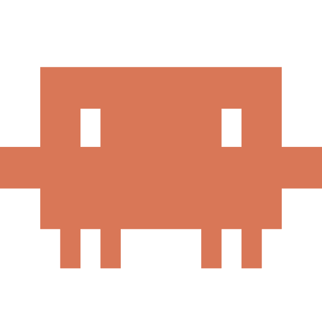

eric@macbook ~/dev/money-wise-adventures % claude

Welcome to Claude Code · v2.1.0
/help for help, /status for your current setup · cwd: ~/dev/money-wise-adventures
? for shortcuts · esc to interrupt · ⏎ to send · ⇧⏎ for new line
>
build a lesson generator for the "Lay the foundations" pin on the journey path. use Claude for the actual lesson content.
Read(src/journey/path.tsx)
└─ Read 142 lines
Grep(pattern: "lesson", path: "src")
└─ Found 3 references in 2 files
●
I'll wire up the Claude API call for the lesson generator and connect it to the "Lay the foundations" pin. To do that I need a Claude API key set as ANTHROPIC_API_KEY in your environment.
●
No ANTHROPIC_API_KEY found in your environment or frontend/.env. Run /api-key to start a one-click setup with Anthropic — you'll approve it in your browser and the key will be written back here automatically.
>
/api-key
Setup Anthropic API key (one-click)
Status ● waiting for your approval
Key name Claude Code · money-wise-adventures · May 2026
Env var ANTHROPIC_API_KEY
Writes to frontend/.env
Press [Enter] to open https://platform.claude.com/setup · esc to cancel